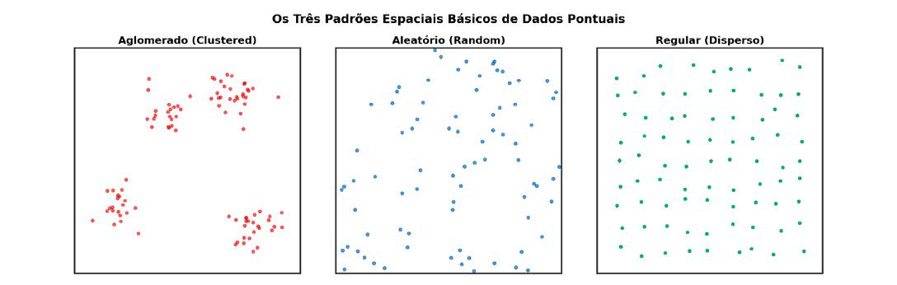

Módulo 3 | Aula 7
Análise Espacial de Dados – Pontos
Padrões Espaciais Básicos
O primeiro passo na análise de um conjunto de dados pontuais é determinar se os eventos observados seguem algum padrão sistemático, em oposição a uma distribuição puramente aleatória. Existem três padrões teóricos básicos:
Figura 1: Padrão de espacialização de eventos no território.

Fonte: Elaborado pelos autores (2026).
| Padrão | Descrição | Exemplo em Saúde Pública |
|---|---|---|
| Regular (Disperso) | Os eventos estão mais uniformemente espaçados do que seria esperado pelo acaso. A presença de um ponto diminui a probabilidade de encontrar outros pontos nas proximidades. | É um padrão raro em epidemiologia, mas poderia teoricamente ocorrer em cenários de competição por recursos ou em processos de exclusão, como a distribuição de unidades de saúde que seguem uma lógica de distanciamento mínimo. |
| Aleatório (Random) | A posição de um evento não tem qualquer influência sobre a posição de outro. Este padrão serve como uma hipótese nula (ausência de padrão) em muitos testes estatísticos. | A distribuição de uma doença não infecciosa rara, sem fatores de risco geográficos conhecidos. |
| Aglomerado (Clustered) | Os eventos estão mais próximos uns dos outros do que seria esperado pelo acaso. A presença de um ponto aumenta a probabilidade de encontrar outros pontos nas proximidades. | Um surto de doença infecciosa em um bairro específico; casos de câncer próximos a uma fonte de poluição ambiental. |
O modelo de referência para um padrão aleatório é o de Completa Aleatoriedade Espacial (CSR - Complete Spatial Randomness). Sob o CSR, qualquer ponto tem a mesma probabilidade de ocorrer em qualquer lugar dentro da área de estudo, e a posição de um ponto é independente dos outros (Câmara, 2004). A maioria das técnicas de análise de padrões pontuais visa testar se os dados observados se desviam significativamente deste modelo de aleatoriedade.
Apesar de suas vantagens analíticas, o uso de dados pontuais em saúde exige cuidados importantes, especialmente relacionados à privacidade e confidencialidade dos indivíduos, já que a localização exata pode permitir a identificação indireta de pessoas. Por isso, em muitos estudos, as coordenadas são deslocadas, agregadas ou anonimizadas antes da divulgação dos resultados.